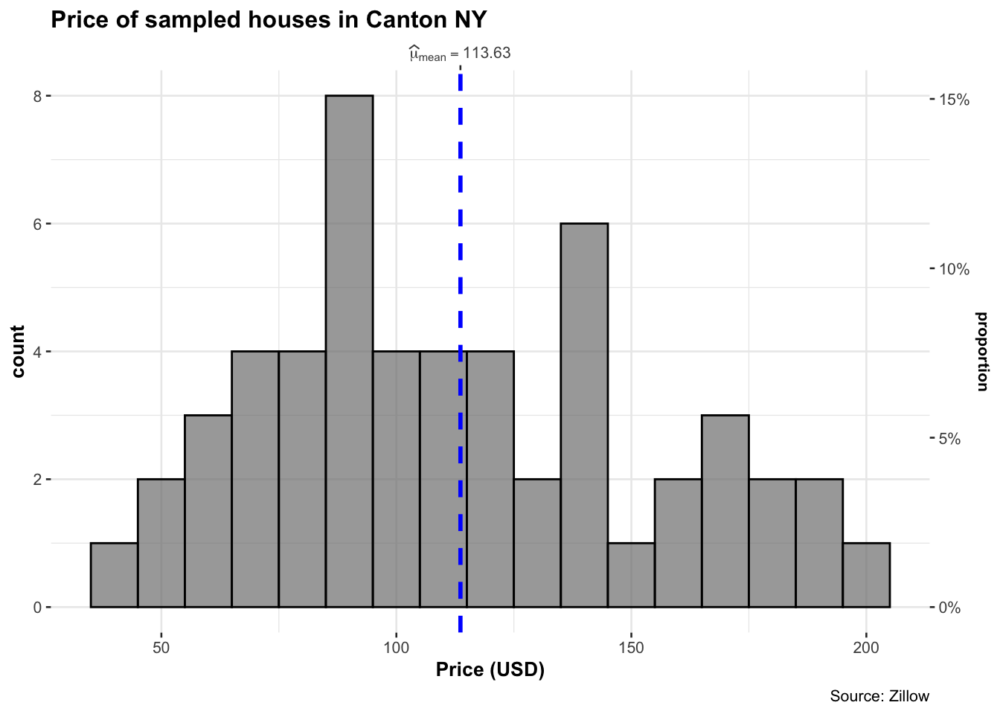
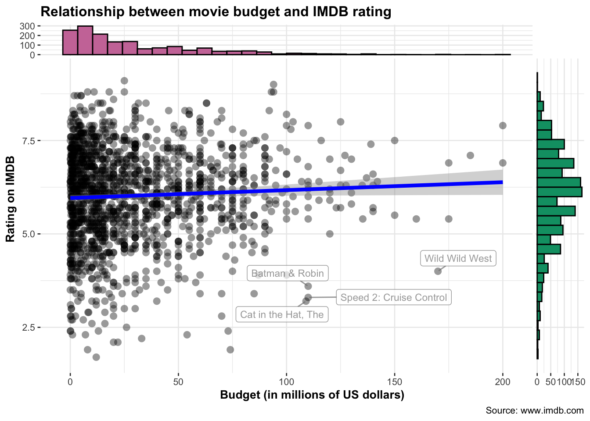

1 Plots
Plots allow us to see patterns, outliers, and trends in a dataset that may not be immediately obvious from the raw numbers. This tutorial showcases several commonly used methods. In terms of your reports, you need to think of 3 things:
1.1 Useful Tutorials
Plots allow us to see patterns, outliers, and trends in a dataset that may not be immediately obvious from the raw numbers. This tutorial showcases several commonly used methods. In terms of your reports, you need to think of 3 things:
Why you are making the plot (quick look vs publication worthy final graphic)
What aspects of the data do you want to highlight (lots of data, comparing groups, weird distributions?.)
What are your final requirements and personal style (colorblind friendly? You’re drawn to a certain style?)
Beyond the tutorials, here are a few high-quality external resources for inspiration and additional practice:
ggplot2 Tutorial in datacamp (free if you log into your PSU account from the class)
If you’re new to data visualization, start with these great explainers:
1.2 Example dataset
Throughout this tutorial, we will the HousesNY dataset from the Stat2Data package. This has the columns:
Price: Estimated price (in $1,000’s)Beds: Number of bedroomsBaths: Number of bathroomsSize: Floor area of the house (in 1,000 square feet)Lot: Size of the lot (in acres)
data("HousesNY", package = "Stat2Data")
print(HousesNY)## Price Beds Baths Size Lot
## 1 57.6 3 2.0 0.960 1.30
## 2 120.0 6 2.0 2.786 0.23
## 3 150.0 4 2.0 1.704 0.27
## 4 143.0 3 2.0 1.200 0.80
## 5 92.5 3 1.0 1.329 0.42
## 6 50.0 2 1.0 0.974 0.34
## 7 89.0 2 2.0 1.029 0.29
## 8 140.0 4 3.0 2.818 0.21
## 9 197.5 4 2.5 2.268 1.00
## 10 125.1 3 2.0 1.936 0.30
## 11 175.0 3 2.0 1.528 1.30
## 12 60.0 3 1.0 0.880 1.00
## 13 138.5 3 2.0 1.416 0.70
## 14 160.0 4 2.0 2.060 0.60
## 15 63.5 3 2.0 1.781 0.20
## 16 107.0 3 1.0 1.428 2.00
## 17 185.0 4 3.5 2.220 0.12
## 18 82.7 3 1.0 1.100 2.07
## 19 75.0 4 2.0 1.400 0.15
## 20 118.0 3 1.0 1.500 0.50
## 21 87.5 4 2.0 2.464 0.33
## 22 67.5 4 1.0 1.515 0.22
## 23 105.0 5 2.0 2.732 0.37
## 24 114.0 4 2.0 2.720 2.50
## 25 100.5 3 2.0 1.608 0.58
## 26 78.0 2 1.0 0.712 1.17
## 27 99.0 3 1.0 0.864 1.66
## 28 144.0 3 1.5 1.968 0.34
## 29 179.0 4 2.0 3.100 0.28
## 30 110.0 3 1.5 1.312 0.21
## 31 175.0 3 2.0 2.127 1.80
## 32 100.0 3 2.0 1.200 3.50
## 33 53.0 3 1.0 1.321 0.25
## 34 92.0 3 2.0 1.815 0.00
## 35 127.0 3 2.0 1.184 0.34
## 36 120.5 2 2.0 1.200 2.00
## 37 72.0 3 2.0 1.442 0.22
## 38 95.0 3 2.0 0.840 1.03
## 39 38.5 3 1.0 1.296 1.42
## 40 139.0 4 2.0 2.160 0.12
## 41 75.0 2 2.0 0.780 0.15
## 42 174.0 4 3.0 1.382 0.48
## 43 119.0 4 2.0 2.375 0.34
## 44 89.0 4 1.0 2.274 1.00
## 45 75.1 4 2.0 1.540 0.35
## 46 92.5 3 2.0 1.790 0.73
## 47 141.0 4 1.0 1.620 0.28
## 48 82.0 3 3.0 1.454 2.50
## 49 162.0 4 1.5 2.044 0.85
## 50 195.0 4 3.0 1.848 1.84
## 51 190.0 5 3.5 2.794 0.31
## 52 115.0 4 2.0 1.401 1.10
## 53 87.0 3 1.5 1.740 0.252 Histograms
2.1 Set-up
You will need these library commands at the top of your script
library(tidyverse)
library(ggstatsplot)
library(ggplot2)
library(ggExtra)
library(ggridges)
library(ggpubr)
library(hrbrthemes)
library(ggthemes)
library(viridis)
library(RColorBrewer)
library(plotly)And remember the column names of our tutorial data-set are:
names(HousesNY)## [1] "Price" "Beds" "Baths" "Size" "Lot"2.2 ggstatsplot
I love ggstatsplot - everything feels intuitive.
gghistostats( data = HousesNY,
x = Price,
binwidth = 10,
xlab = "Price (USD)",
title = "Price of sampled houses in Canton NY",
caption = "Source: Zillow",
results.subtitle = FALSE)
2.3 ggplot2 histograms
Here’s a minimal example using geom_histogram. We first
load the data using ggplot2, then plot it as a geom_histogram with 20
bins. Each line is connected using a + sign.
ggplot(HousesNY, aes(x = Price)) +
geom_histogram(bins = 20) +
labs(x = "House Price (USD)")You can enhance the appearance using labels, dollar formatting, and color styling. There are MANY options.
ggplot(HousesNY, aes(x = Price)) +
geom_histogram(bins = 15, color="navy",fill = "steelblue") +
labs(x = "House Price (USD)",
y = "Number of Houses",
title = "Add your title",
subtitle = "And/or add your subtitle",) +
scale_x_continuous(labels = scales::dollar_format()) +
theme_light(base_size = 12)There are also different themes inside the ggthemes package, which will change the look of your plot with a single click of a button. To do this easily, I can save the basic plot - then add the theme to it before printing it out on the screen.
myplot <- ggplot(HousesNY, aes(x = Price)) +
geom_histogram(binwidth = 10) +
labs(x = "House Price (USD)", y = "Count") # I could just add the theme here,
plota <- myplot + theme_few()
plotb <- myplot + theme_tufte()
plotc <- myplot + theme_ipsum()
plotd <- myplot + theme_wsj()
# and I can use ggarrange to plot sub-plots
ggarrange(plota, plotb, plotc, plotd, ncol = 2, nrow = 2)
3 Ridgelines, Violins & boxplots
3.1 Setup
You will need these library commands at the top of your script
library(tidyverse)
library(ggstatsplot)
library(ggplot2)
library(ggExtra)
library(ggridges)
library(ggpubr)
library(hrbrthemes)
library(ggthemes)
library(viridis)
library(RColorBrewer)
library(plotly)And remember the column names of our tutorial data-set are:
names(HousesNY)## [1] "Price" "Beds" "Baths" "Size" "Lot"Sometimes we want to compare different sub-populations within our data—for example, comparing house prices based on the number of bedrooms.
To do this effectively, we need to make sure that the variable we’re using to define subgroups is treated as a categorical variable (called a factor in R). If it’s numeric, R will assume it’s continuous and won’t group the data properly.
In the example below, we convert Beds into a factor so
that we can compare price distributions by number of
bedrooms:
HousesNY$Beds <- as.factor(HousesNY$Beds)3.2 Ridgeline plots (#T_Ridgeline)
Ridgeline plots are a way of looking at histograms for different groups. They work especially when your grouping data is ORDINAL (has some inherent order). So bedrooms would be a good example
Two great pages here:
We can use histograms or smoothed density lines https://www.data-to-viz.com/graph/ridgeline.html
library(ggridges)
library(ggplot2)
HousesNY %>%
ggplot( aes(y=Beds, x=Price, fill=Beds)) +
geom_density_ridges(alpha=0.6, stat="binline") +
scale_fill_viridis(discrete=TRUE) +
scale_color_viridis(discrete=TRUE) +
theme_ipsum() +
theme(
legend.position="none",
panel.spacing = unit(0.1, "lines"),
strip.text.x = element_text(size = 8)
) +
xlab("") +
ylab("Number of Bedrooms")
All of these are from https://r-charts.com/distribution/ggridges/
library(ggridges)
library(ggplot2)
ggplot(HousesNY, aes(x = Price, y = Beds, fill = stat(x))) +
geom_density_ridges_gradient() +
scale_fill_viridis_c(name = "Depth", option = "C") +
coord_cartesian(clip = "off") + # To avoid cut off
theme_minimal()We can also make the colours more meaningful, for example adding quantiles to show the median and interquartile range
ggplot(HousesNY, aes(x = Price, y = Beds, fill = stat(quantile))) +
stat_density_ridges(quantile_lines = FALSE,
calc_ecdf = TRUE,
geom = "density_ridges_gradient") +
scale_fill_brewer(name = "")or highlighting tails
ggplot(HousesNY, aes(x = Price, y = Beds, fill = stat(quantile))) +
stat_density_ridges(quantile_lines = TRUE,
calc_ecdf = TRUE,
geom = "density_ridges_gradient",
quantiles = c(0.05, 0.95)) +
scale_fill_manual(name = "Proportion",
values = c("#E2FFF2", "white", "#B0E0E6"),
labels = c("(0, 5%]", "(5%, 95%]", "(95%, 1]"))
3.3 Violin plots
We can also use violin plots to compare categories. Our houses data isn’t really big enough to do this justice, so here’s an example from another dataset on an old science experiment. We can customise it even more using this tutorial (https://www.r-graph-gallery.com/web-violinplot-with-ggstatsplot.html)
# modifying defaults
ggbetweenstats(
morley,
x = Expt,
y = Speed,
xlab = "Experiment number",
ylab = "Speed-of-light measurement",
pairwise.display="significant",
results.subtitle=FALSE,
centrality.point.args = list(size = 3, color = "darkblue"),
bf.message = FALSE)
3.4 Box-plots {T_boxplots}
Boxplots have been around over 40 years! See their history and evolution here: http://vita.had.co.nz/papers/boxplots.pdf
Boxplots are especially good at allowing you to compare different groups of things or to look for multiple groups in a single response variable. Here is a beautiful example made by Marcus Beckman on dissertation lengths.
The absolute basics in ggplot2.
ggplot(HousesNY, aes(x =Beds, y = Price)) + ## this loads the data
geom_boxplot() +
theme_minimal() ## and we choose a boxplotWe can easily do more sophisticated things. For example, here’s how to see the underlying data points, which allows us to see something of the background distribution
https://r-charts.com/distribution/box-plot-jitter-ggplot2/
There are MANY more options, plus code here: https://www.r-graph-gallery.com/boxplot.html
and a delightful tutorial here: https://www.r-bloggers.com/2021/11/how-to-make-stunning-boxplots-in-r-a-complete-guide-with-ggplot2/
For example, here’s a version adding in the background data using ggstatsplot.
ggbetweenstats(data = HousesNY,
x = Beds,
y = Price,
xlab = "Number of bedrooms",
ylab = "House Price (USD)",
pairwise.display="significant",
results.subtitle=FALSE,
violin.args = list(width = 0, linewidth = 0),
centrality.plotting = FALSE,
bf.message = FALSE)
4 Scatterplots
4.1 Setup
You will need these library commands at the top of your script
library(tidyverse)
library(ggstatsplot)
library(ggplot2)
library(ggExtra)
library(ggridges)
library(ggpubr)
library(hrbrthemes)
library(ggthemes)
library(viridis)
library(RColorBrewer)
library(plotly)And remember the column names of our tutorial data-set are:
names(HousesNY)## [1] "Price" "Beds" "Baths" "Size" "Lot"4.2 Basics
Here’s how to make a basic scatterplot using the HousesNY example dataset that I discussed earlier with the bed and price column names.
You can see that each command is joined by a “+”.
ggplot(HousesNY, aes(x=Size, y=Price)) +
geom_point() +
ggtitle("Size vs Price of New York Homes") +
xlab("Size (sq ft)") + ylab("Price (1000 USD)")
There are MANY different versions of this. Feel free to choose your favourite.
4.3 Add regression line
To add a line of best fit, we simply add a new command geom_smooth()
ggplot(HousesNY, aes(x=Size, y=Price)) +
geom_point() +
geom_smooth(method=lm , color="red", se=FALSE) +
ggtitle("Size vs Price of New York Homes") +
xlab("Size (sq ft)") + ylab("Price (1000 USD)") +
theme_light() 
We can even add confidence intervals. Here we expect that the POPULATION regression line will fall within the gray cloud 95% of the time.
ggplot(HousesNY, aes(x=Size, y=Price)) +
geom_point() +
geom_smooth(method=lm , color="red", se=TRUE, level = 0.95) +
ggtitle("Size vs Price of New York Homes") +
xlab("Size (sq ft)") + ylab("Price (1000 USD)") +
theme_light() 
For a more fancy one, try ggscatterstats from ggstatsplot. Tutorial here: https://indrajeetpatil.github.io/ggstatsplot/articles/web_only/ggscatterstats.html
ggscatterstats(
data = HousesNY,
x = Size,
y = Price,
xlab = "Size (sq ft)",
ylab = "Price (1000 USD)",
xsidehistogram.args = list(fill = "#CC79A7", color = "black",
na.rm = TRUE,bins=20),
ysidehistogram.args = list(fill = "#009E73", color = "black",
na.rm = TRUE,bins=20),
title = "Relationship between size houseprice",
caption = "Canton, NY",
results.subtitle=FALSE)Or if your dataset has a descriptor column like name/city/object, then you can label points. For example, for the ggplot2 movies dataset:
ggscatterstats(
data = movies_long, ## data frame from which variables are taken
x = budget,
y = rating,
xlab = "Budget (in millions of US dollars)",
ylab = "Rating on IMDB",
title = "Relationship between movie budget and IMDB rating",
caption = "Source: www.imdb.com",
label.var = title, ## column name to use for labeling data points
label.expression = rating < 5 & budget > 100, ## decide which which points to label
point.label.args = list(alpha = 0.7, size = 3, color = "grey50"),
xsidehistogram.args = list(fill = "#CC79A7",color="black",bins=30),
ysidehistogram.args = list(fill = "#009E73",color="black",bins=30),
results.subtitle=FALSE
)
4.4 Interactive scatterplots!
You can use the plotly library to make ANY ggplot2 plot interactive
This is really useful, try zooming in or clicking on a few points. If you don’t want the line of best fit, simply remove the geom_smooth line. It’s also very easy to add in color to see another variable. For example, here I also add in the house size. If you don’t want that, just remove the color=Size.
# create the plot, save it as "p" rather than print immediately
myplot <- ggplot(HousesNY, aes(x=Beds, y=Price,color=Size)) +
geom_point() +
scale_color_gradient(low="blue", high="red")+
ggtitle("New York Homes price by bedrooms and lot size (acres)") +
xlab("Beds") +
ylab("Price (1000 USD)")
# and plot interactively
ggplotly(myplot)If you get this error, go to the Session menu at the very top of the screen and click “Restart R and run all code chunks”.
Error in file(file, ifelse(append, "a", "w")) :
cannot open the connectionMany more interactive options in this tutorial: https://plotly.com/r/line-and-scatter/